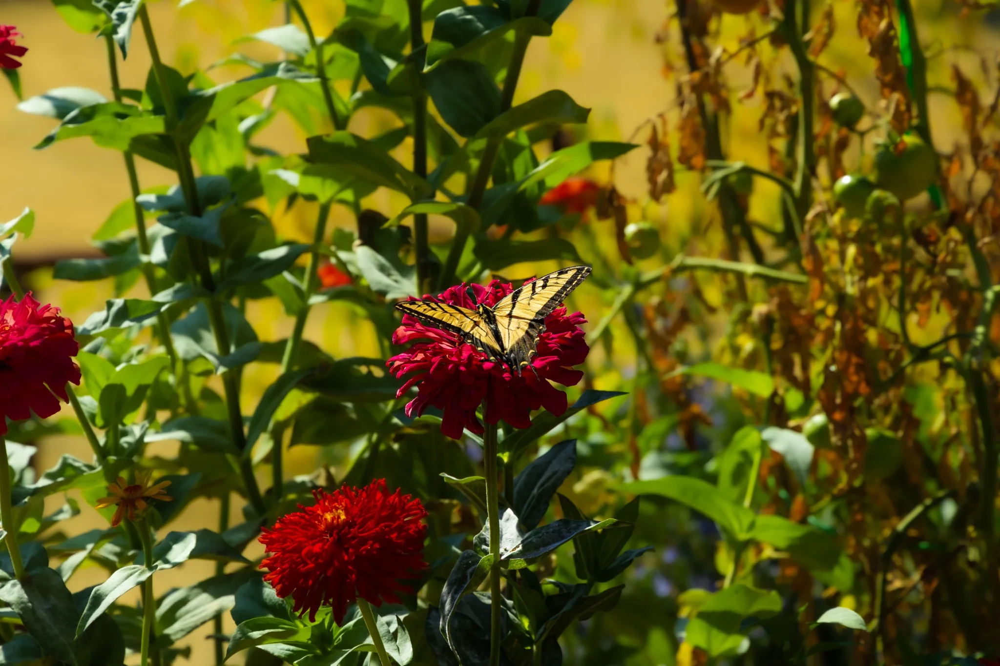
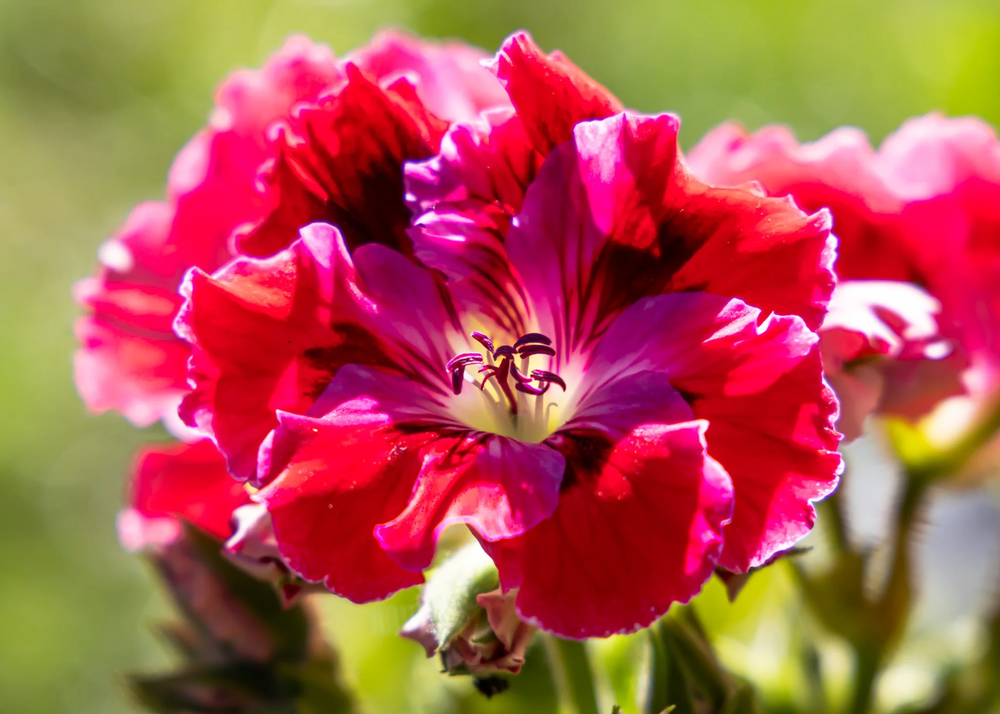
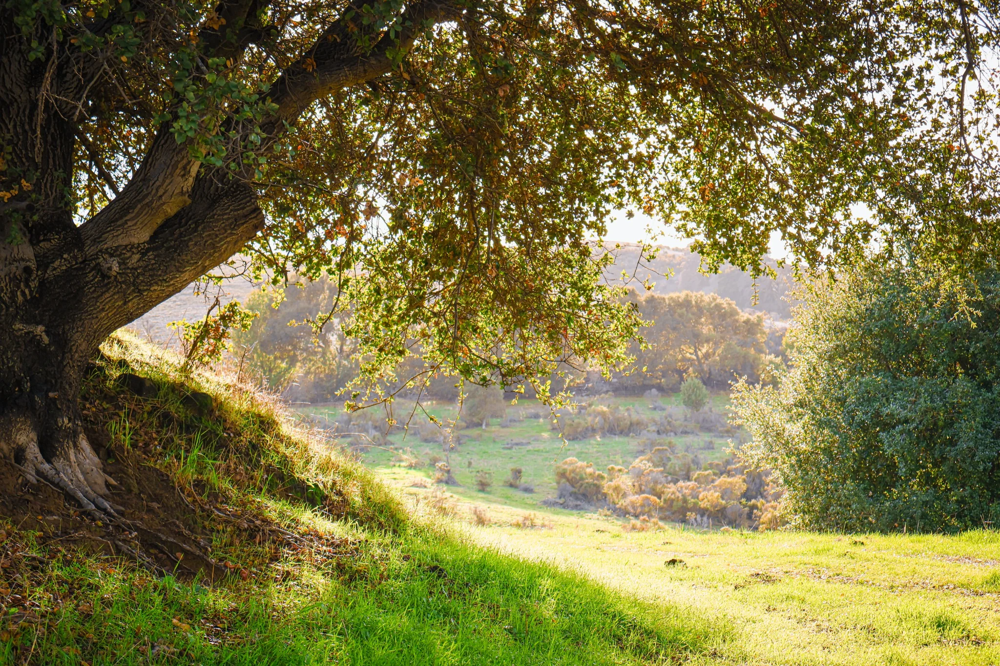
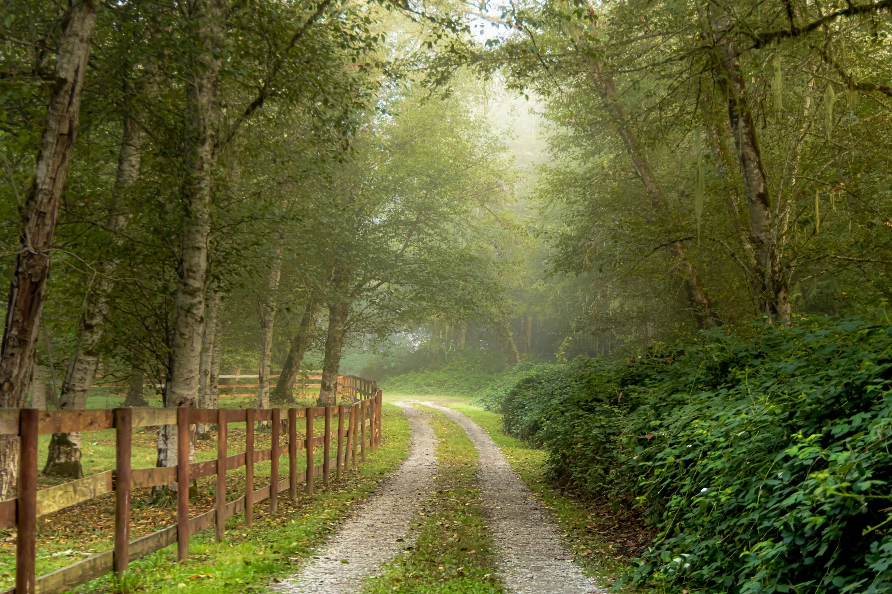
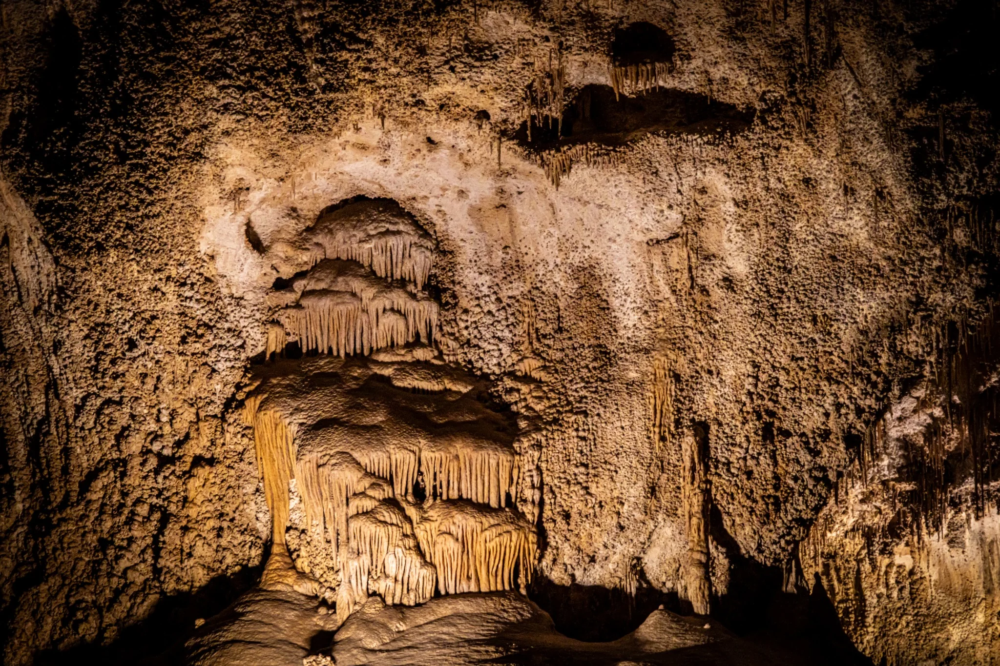
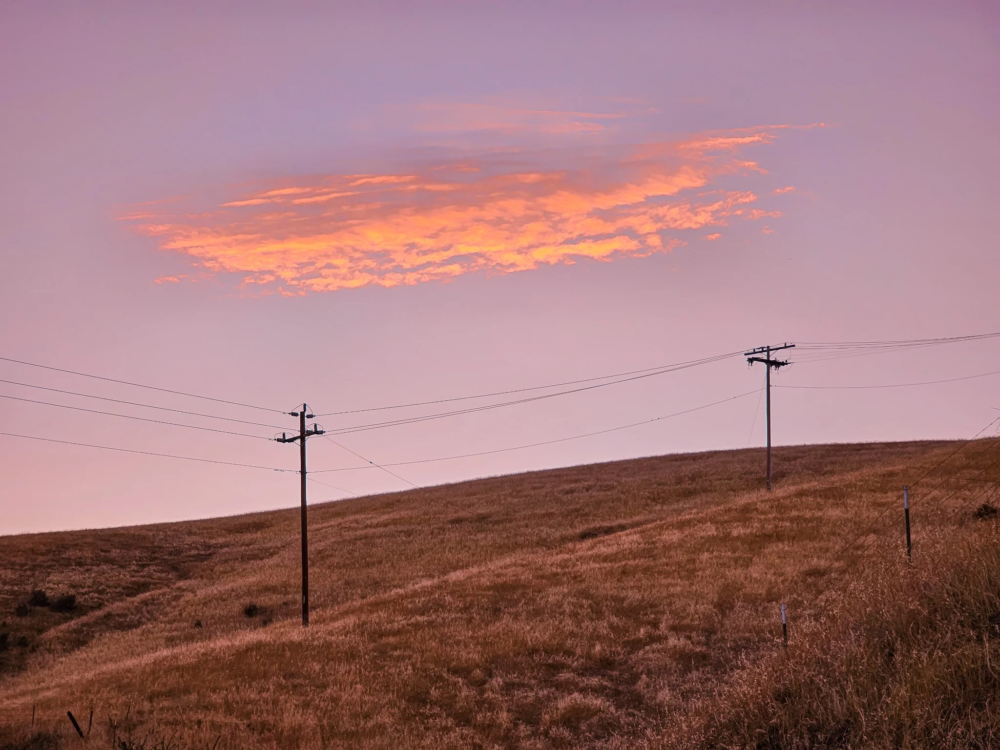
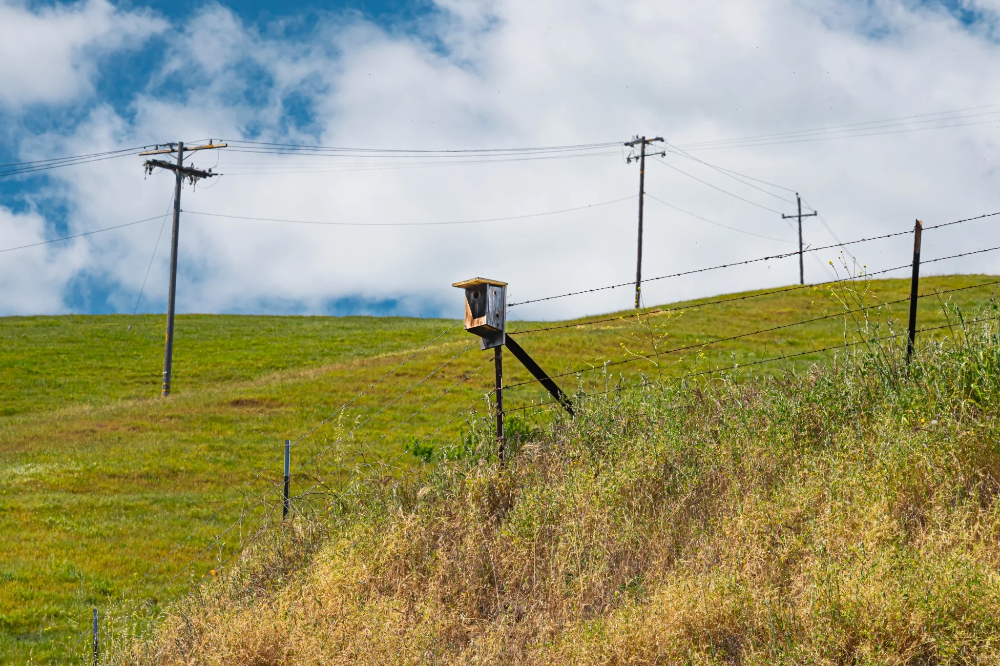
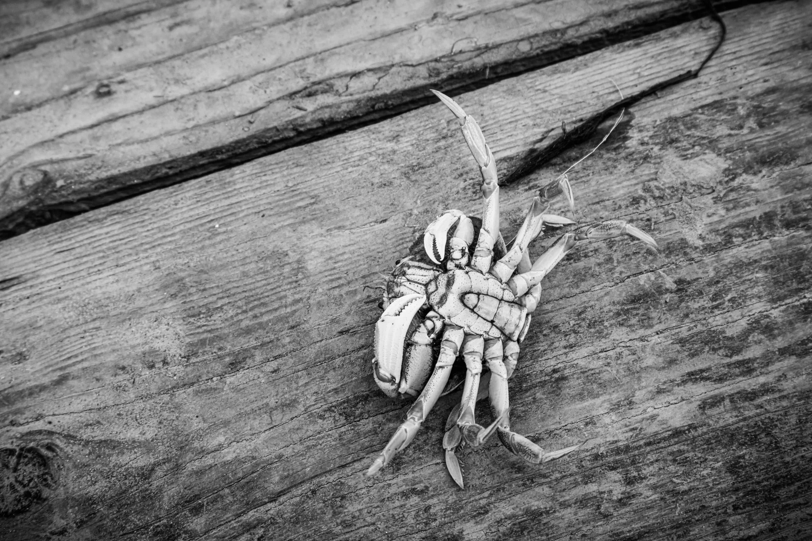

Collections
Choose what speaks to you.
Not everyone notices the same thing. That is part of the pleasure of looking.
Small Wonders
Wildlife, flowers, fungi, rain, and overlooked details.





Quiet Places
Roads, landscapes, and places that allow the eye to wander.






Local Favorites
Crockett, the Carquinez Strait, and scenes that feel like home.


Light & Form
Experiments in motion, shape, texture, and interpretation.

